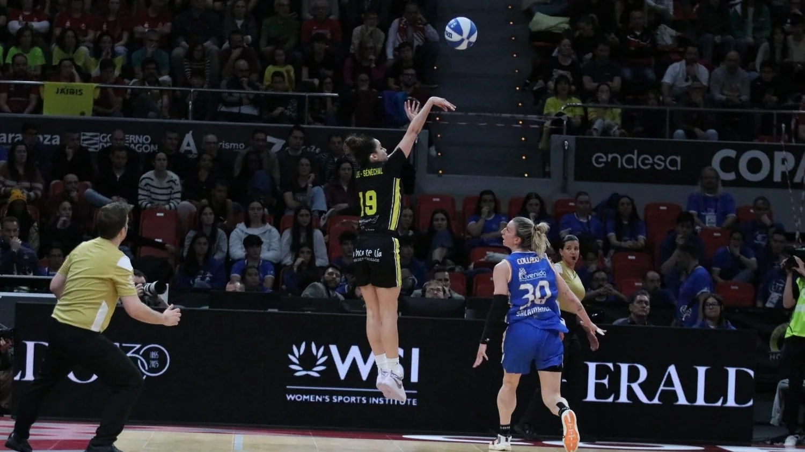

I was born in Guadalajara, to a Mexican father and a French mother. When I was five, my mum and I
moved to Grenoble, and every year I went back to Mexico to see my dad. Growing up with two families
and two cultures shaped who I am, and the way I play.
The court
I was a shy kid in a new country. At eight I tried basketball at school. It was new to everyone in
the class, so for once I wasn’t the outsider. On the court I felt like an equal.
Childhood, Grenoble or Guadalajara · 3:2
The long way
Almost nothing went to plan. The year in Ireland was never the idea, but it taught me English and got
me ready. From there my stepdad and I wrote to hundreds of American colleges, and a handful wrote
back. I followed my instinct to Fairfield, stayed four years, and in the last one we won the
conference for the first time in twenty-four. Then came a year at UConn, and a draft night when I
heard my name and thought: why so soon?
Now
Today I play in Spain for Hozono Global Jairis. After a lot of moving around, I’ve found stability
here, and a club that feels like family. There have been injuries and long recoveries along the way.
The goals stay the same.
There’s never a perfect path, a perfect way. There’s your way.
Lou, speaking to ESPN · 2023

Copa de la Reina final · 2025. Photo: Campo Atrás
Born
Guadalajara, Mexico · 1998
Raised
Grenoble, France
Position
Small forward
Height
1.85 m · 6′1″
Club
Hozono Global Jairis
Speaks
Spanish, French, English
Team first
The goals I enjoy most are the ones we share.
Adapt
New countries, new languages, new roles. I settle in quickly, and every move has helped me grow.
Compete
I love to compete. Reaching the top level is hard, and staying there is just as hard.